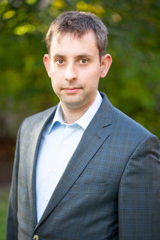

Über uns
Wir sind ein professionelles Team, das sich mit Entschlossenheit, Engagement und Kreativität dem wichtigen Auftrag stellt, Kindern und Jugendlichen zu helfen, lebenstüchtig zu werden. Jeder von uns ist bereit, Verantwortung zu übernehmen. Wir sehen die Probleme der benachteiligten Kinder, die von Ausnutzung, Gewalt und Missbrauch betroffen sind, und setzen alles daran, sie zu lösen – auch unkonventionell.
Wir geben den Kindern für begrenzte Zeit ein emotional warmes Zuhause, in dem Werte erfahrbar und Entwicklung möglich sind. Wir sind kompetent – aber nicht allwissend. Deshalb lernen wir jeden Tag neu – von Kindern, Eltern und Kollegen. Regelmäßige Fortbildungen sind ebenso Teil unseres Alltags wie das Lernen aus unseren eigenen Fehlern und Erfahrungen.
Wir freuen uns sehr über den Zuwachs an Mitarbeitern durch den Start der zweiten Gruppe im therapeutisch pädagogischen Zentrum. Alle zusammen sind wir ein löwenstarkes Team. Für die gute Versorgung der Kinder sind jetzt auch zwei Hauswirtschafterinnen hinzugekommen, die eine wichtige Stütze im Alltag sind.
Dr. Regina Hiller

Dipl.-Psych. / Dipl.-Päd. / Dipl.-Soz.Päd. Kinder- und Jugendlichenpsychotherapeutin
Regina Hiller ist ausgebildete Traumatherapeutin und analytische Kinder- und Jugendlichenpsychotherapeutin und hat jahrelang in der Kinder- und Jugendpsychiatrie - LWL Universitätsklinik Hamm - gearbeitet.
"Mein Herz schlägt dafür, dass benachteiligte Kinder persönliche Schwierigkeiten überwinden, ihr soziales emotionales und kreatives Potential entfalten und zu fröhlichen und mutigen Persönlichkeiten heranreifen."